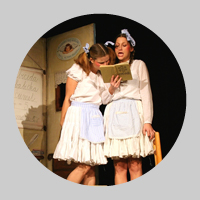
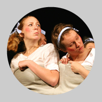
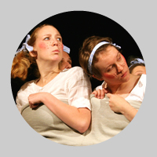

Fimfárum
Fimfárum není jenom známá kní�ka. Fimfárum je pøedevším kouzlo. A pak je to taky jedna zkamenìlá silnièní pøíhoda. Vìøte nebo ne, ale ona o tom, jak to všechno zaèalo i o tom, jak to potom pokraèovalo a najmì pak o tom, jak to nakonec všechno dopadlo, vypráví jedna trojitá divadelní nepohádka… Divadelní komedie s mnoha kouzly, nìkolika pravdami, tøemi sestrami, jedním fimfárem, jednou lakomou Barkou a nejedním pøekvapením.
Fimfárum
Dramatizace pohádky nepohádky ze stejnojmenné kní�ky Jana Wericha, Hraje Naèerno
Divadelní adaptace a re�ie: Ludìk Horkı
Herecká spolupráce: Denisa Nová
Vıprava: Lucie a Rozárka Valenovy
Hudba: Miloslav Ducháè
Text písnì: Ludìk Horkı
Hudební nastudování a realizace vıpravy: Naèerno
Krotitel zvíøátek: Jakub Baran
Svìtla: Filip Beitl a Jakub Hudec
{kind=link}
{kind=link}
{kind=link}
{kind=link}
{kind=link}
{kind=link}
Osoby a obsazení
Pasáèek: Martin Holzknecht
Husopaská: Lucie Špitálská
Nevìrná kováøka: Veronika Bártová nebo Eliška Holzknechtová
Matka: Markéta Hausnerová nebo Bára Kašpaøíková
Kováø: Oliver Cox nebo Vojtìch Chalupa
Lokaj: Pavel Trnka
Kní�epán: Matìj Køístek nebo Matìj Trojan
Èert: Jan Øehoøka nebo Michal Škoda
Vodník Èochtan: Jakub Heømánek
Bezhlavı rytíø: Oliver Cox nebo Vojtìch Chalupa
Bílá paní: Veronika Lapková nebo Lenka Rudová
Hejkalka: Kateøina Chadimová
První oveèka: Veronika Lapková nebo Lenka Rudová
Druhá oveèka: Kateøina Chadimová
Beránek: Oliver Cox nebo Vojtìch Chalupa
První husièka: Markéta Hausnerová nebo Bára Kašpaøíková
Druhá husièka: Veronika Bártová nebo Eliška Holzknechtová
Houser: Jan Øehoøka nebo Michal Škoda
Premiéry: 23. února a 14. bøezna 2012 v rámci 23. sezóny Divadelního souboru Ty-já-tr
Dìtskı dramatickı soubor Ty-já-tr (umìleckı šéf Radka Tesárková)
NAÈERNO v divadelní sezónì 2011/12 vedou Ludìk Horkı, Denisa Nová a Lucie Valenová
Zøizovatel souboru: DDM Praha 7 (øeditel Jiøí Svoboda)
Divadlo RADAR, ulice Pplk. Sochora 9, Praha 7
Objednávky, rezervace vstupenek a informace: Ludìk Horkı (tel. 732 547 461)
Tøi sestry a jeden prsten
Nepohádka, 30 minut bez pøestávky, hraje Hrobeso
Svìt �en a svìt mu�ù, legrace, hospùdka, høbitùvek a velikonoèní horko v pøímém pøenosu. Jevištní adaptace krátké a rozverné pohádky nepohádky Jana Wericha z populární kní�ky Fimfárum. Letní komedie o legraci, pøi které si to tøi sestry rozdají ponejprv s devíti korbely piva, hned na to s jedním pozoruhodnım nálezem a nakonec s vlastními man�ely.
Text: Jan Werich
Jevištní adaptace a re�ie: Ludìk Horkı
Scéna, kostımy a plakát: Rozárka a Lucie Valenovy
Herecká spolupráce: Denisa Nová
Hudba k písni: Jaroslav Je�ek
Text písnì: Ludìk Horkı
Osoby a obsazení
Hubert: Radek Pivoda / Luboš Pøívozník / Radek Šedivı
Marie: Bìla Fuková / Markéta Jurná / Jana Pleskaèová
Vilém: Filip Brouk / Jiøí Hlásek / Ladislav Maøata / Ján Polák
Tylda: Jana Kobesová / Martina Øeháèková / Kateøina Tyllerová / Martina Tyllerová
Jan: Kryštof Mende / Vojta Štulc / Jakub Zagar
Bára: Jana Kobesová / Lucie Valenová / Lenka Zahradnická
Hostinskı: Filip Beitl / Martin Èepelík / Ondøej Peèenı
Premiéra 29. èervna 2010 v Divadle Radar
Lakomá Barka
Pohádka nepohádka, 50 minut bez pøestávky, hraje CO?!
Øekli byste Dejvice — dej více! Vùbec ne! Lakotili, hamonili a byli krkouni. Nejlakomìjší dr�grešle ze všech byla Barka, faráøova kuchaøka.
Dramatizace pohádky nepohádky z knihy Jana Werich Fimfárum.
Divadelní adaptace: Ludìk Horkı
Re�ie: Lucije Valenová a Lucie Wildtová
Vıprava: Lucije a Rozárka Valenovy
Realizace vıpravy: CO?!

 

Osoby a obsazení:
Barka: Ondøej �ulpík
Faráø: Tomáš Horáèek
Uèitel: Jan Tichı
Uèitelová: Marta Procházková
Kubát: Pavel Paleèek
Kubátová: Ivana Vránková/Denisa Dlouhá
Starosta: Ondøej Wald
Starostová: Denisa Dlouhá/Ivana Vránková
Dìti: Klára Kuncová, Tereza Suchá, Pavel Paleèek, Denisa Dlouhá, Ivana Vránková
Pøedstavení má 50min, hraje se bez pøestávky
Premiéra: 20. èervna 2012 v Divadle Radar